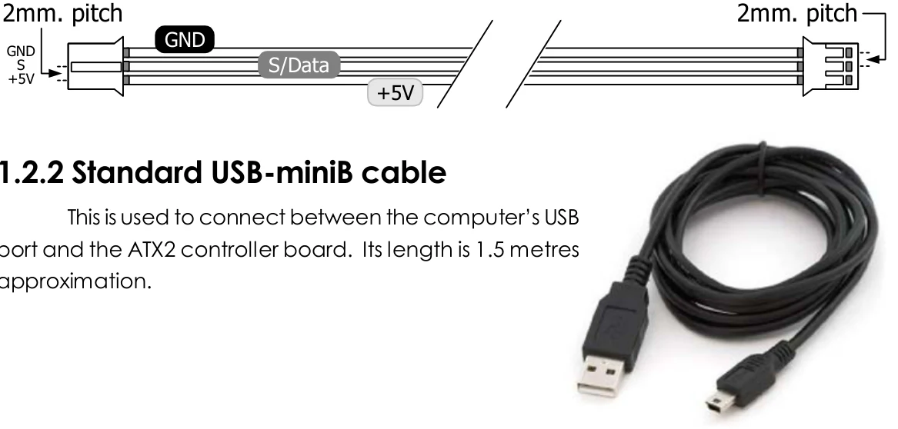

1.2.1 JST3AA-8 cable
This is an INEX standard cable, 3-wires combined with 2mm. The JST connector is at each end. 8 inches (20cm.) in length. The wire assignment is shown in the diagram below.

Original manual, page 7
This is an INEX standard cable, 3-wires combined with 2mm. The JST connector is at each end. 8 inches (20cm.) in length. The wire assignment is shown in the diagram below.

Original manual, page 7
↑ ↓ to move, Enter to open, Esc to close